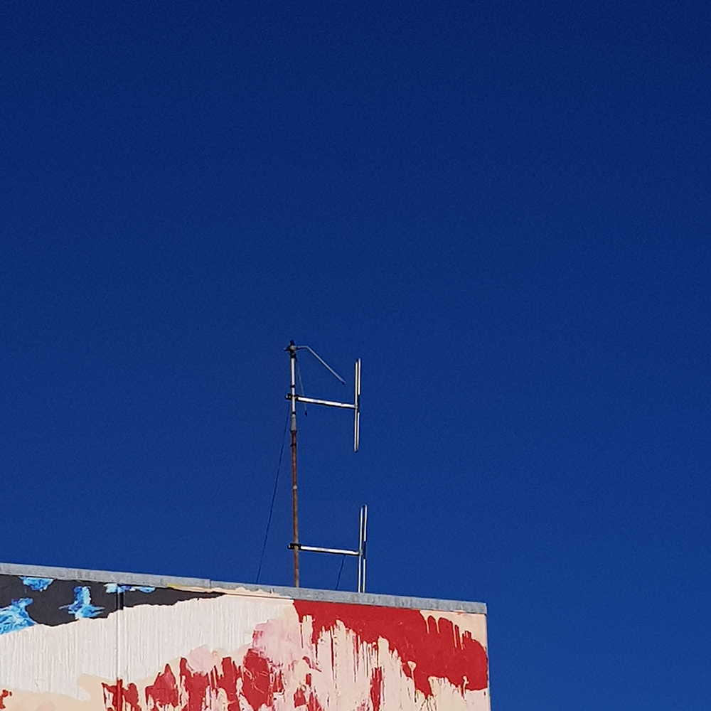

Above our heads and beneath our feet is a network connecting us to the internet at any given moment in time.
Manhole covers, CCTV cameras, antennae, and markings on the street
are just some of the physical ways we can see the internet around us.
On the tops of many of the buildings around us in the city are antennae of all different types. They are used primarily to receive television broadcasts in homes and workplaces. There are two primary types of television antennae used in New Zealand, satellite dishes and UHF aerials , both of which are pictured in the images below